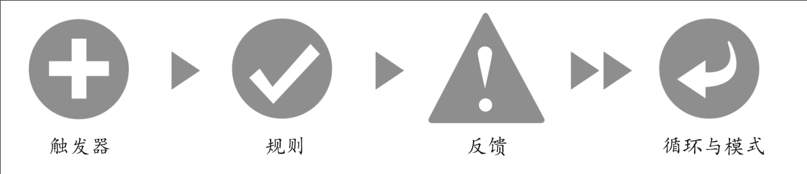

微交互的结构¶
一个设计完善的微交互必须适当地处理四个不同的部分。

微交互始于对用户需救济的理解：用户想要做什么，什么时候会这么想，有多频繁。
触发器和反馈更重要的地方在于表达产品个性。可以说反馈（连同整个外观）完全决定了产品的个性。
微交互的设计理念¶
把微交互集成到产品中有三种方式。
逐个设计微交互¶
在设计产品/简化既有产品时，尽量找出所有可能的微交互，各个击破。
各个击破的挑战在于如何限定每个微交互的范围，在限定条件下做设计的实践，明确各种约束条件，而且要尽可能做小。
把复杂的应用程序简化为个别的产品，每个产品构建于一个微交互上¶
把微交互作为产品，让产品专注于一件事，而且把这件事做好。“最小化可行性产品”
把最复杂的数字产品当成很多微交互的构成¶
缺点是可能会迷失在微交互中，只见树木而不见森林，最终导致所有细节不能构成一个整体。